General Maintenance:
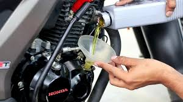
Engine Oil:
Checking and replacing engine oil, as well as checking its condition.
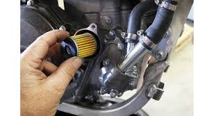
Air Filter:
The AC filter also cleans the air you breathe. It not only catches dirt and dust, but it also filters out mold spores, fungi, bacteria, pet fur, dander, smoke, pollutants, harmful chemicals, and more. This
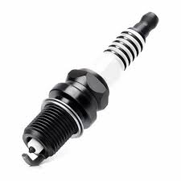
Spark Plugs:
Spark plugs ignite the air-fuel mixture in an internal combustion engine. They are crucial for creating the spark that initiates combustion, which powers the engine.
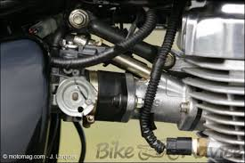
Fuel System:
A Fuel Injection (FI) system in motorcycles uses electronics and sensors to precisely control the fuel flow into the engine, replacing the older carburetor system.
Battery:
Ensure the battery is properly maintained, especially if the bike is not used frequently.
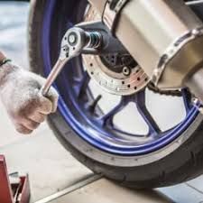
Brake Service:
Your safety is our priority. We provide comprehensive brake inspections, repairs, and replacements to keep your braking system in top condition.
Specialized Services:
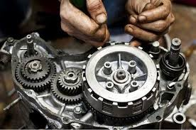
Engine Overhaul:
An engine overhaul for a two-wheeler, also known as an engine rebuild or reconditioning, is a comprehensive process involving the disassembly, inspection, cleaning, repair, and replacement of worn or damaged engine components.
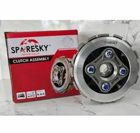
Clutch and Transmission:
the clutch and transmission work together to transfer power from the engine to the rear wheel.
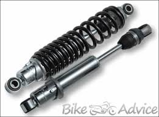
Suspension:
The two most common types of suspension systems used in modern vehicles are independent suspension and solid axle suspension.
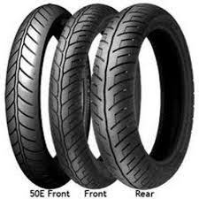
Tyre and Wheel Care:
This includes regular checks for tire pressure and tread wear, cleaning, and potentially wheel balancing or alignment, depending on the vehicle and usage.
Other Services:
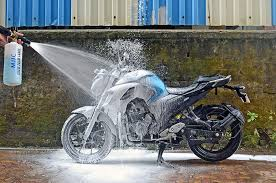
Wash and Detailing:
Cleaning and polishing the exterior of the motorcycle.
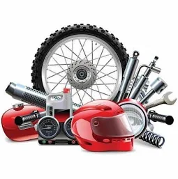
Spare Parts Replacement:
Replacing any worn or damaged parts.
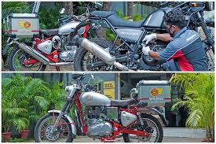
Doorstep Service:
Providing service at the customer's location.
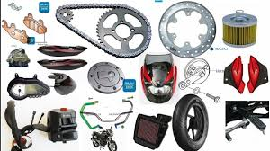
Genuine Parts:
Using only original equipment manufacturer (OEM) or high-quality replacement parts.
Why Choose Us?
Quality Service
We are committed to providing the highest quality service to our customers. Our experienced technicians use the best tools and techniques to ensure your vehicle is in top condition.
Affordable Prices
We believe that quality service should be affordable. We offer competitive pricing without compromising on the quality of our work.
Excellent Customer Service
Our friendly staff is always ready to assist you with any questions or concerns. We value your feedback and strive to improve our services continuously.
Overview
Aakash Service Center in Keshav Nagar-Mundhwa, Pune is a renowned automobile repair service, providing expert vehicle maintenance and repair solutions. Known for its reliable services and customer-first approach, this repair center has become a trusted destination for vehicle owners looking for high-quality automotive care.
Services Offered
Aakash Service Center in Keshav Nagar-Mundhwa, Pune offers a full spectrum of automobile repair services designed to address every aspect of vehicle maintenance and repair. Whether you're dealing with a minor issue or need a more extensive repair, this center has the expertise to handle it.
In addition to these services, Aakash Service Center in Keshav Nagar-Mundhwa, Pune specializes in Garages. Whether you're dealing with a routine issue or something more complex, Aakash Service Center in Keshav Nagar-Mundhwa, Pune has everything you need to keep your vehicle in top condition.
Establishment Details
Established in 2017, Aakash Service Center in Keshav Nagar-Mundhwa, Pune has built a solid reputation for quality work and customer satisfaction. The repair center is rated 4.7 based on 89 customer reviews, making it one of the most reliable automotive repair shops in the area. Conveniently located near Near New Orbis School, Aakash Service Center in Keshav Nagar-Mundhwa, Pune is easily accessible for drivers looking for expert vehicle care.